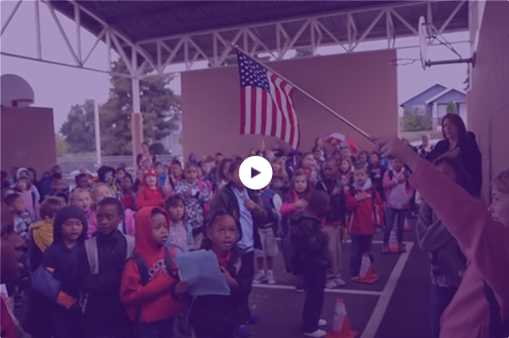

Featured Video
Creating a safe, equitable, welcoming, and effective school enviroment is the first step to creating sustainable school transformation. See how Franklin Elementary School has created a social culture where respectful, responsible, safe, and caring behaviors are taught and reinforced every day with every student. Watch the Video
CityLine TV Tacoma
Check us out on CityLine TV Tacoma! Greg Benner, Jennifer Kubista, and Lyle Quasim share the importance of The Tacoma Whole Child Initiative and the movement that is taking our city by storm—and changing lives! Watch the Video